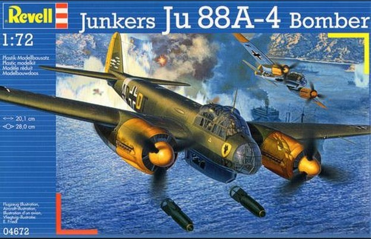
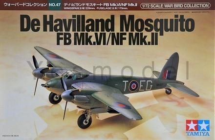

Tady najdete seznam mnou vlastněných stavebnic modelů letadel, základní informace o výrobci, měřítku modelu a můj názor na stavebnici.
Výběr ze stavebnic
JUNKERS JU 88-4 (Revell, 1:72)

Asi nejlepší stavebnice od Revellu, co mám. Kabina je velká modelářská výzva, je hodně členiná. Existuje spousta variant nátěrů. Jedná se o nejúspěšnější německé letadlo 2. světové války.
MOSQUITO FB MK.VI/NF MK.II (Tamiya, 1:72)

Špičková stavebnice od Tamiya, v precizním provedení jednotlivých dílů i obtisků. Jedná se o nejúspěšnější britské letadlo 2. světové války. Zajímavostí byl dřevěný trup tohoto letadla.